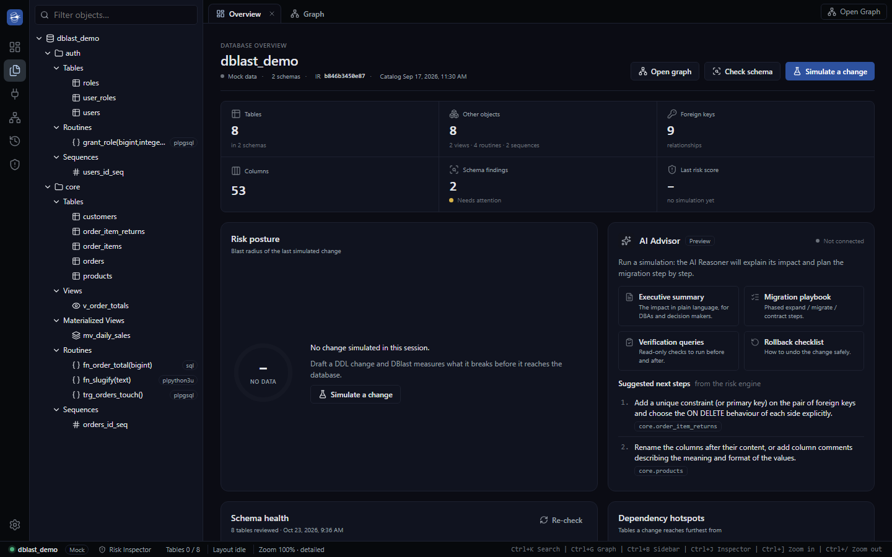
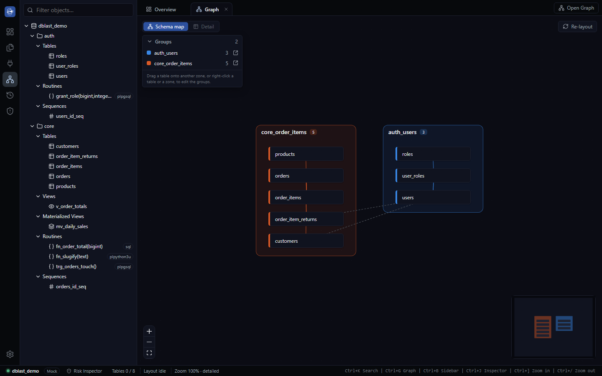
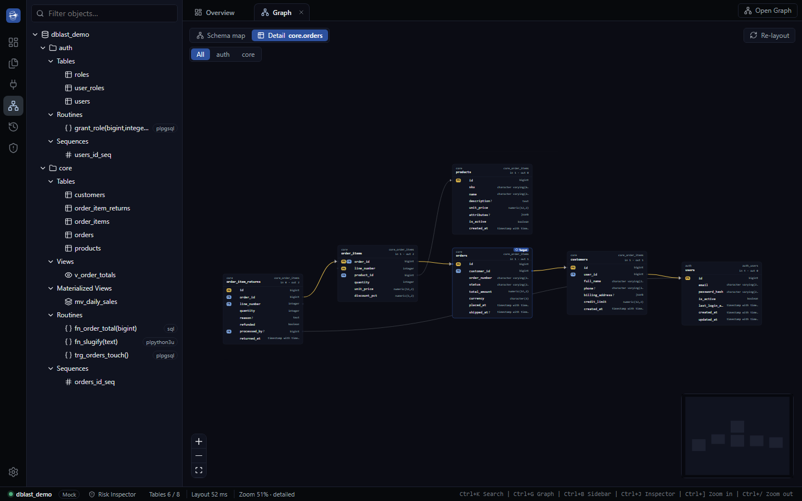
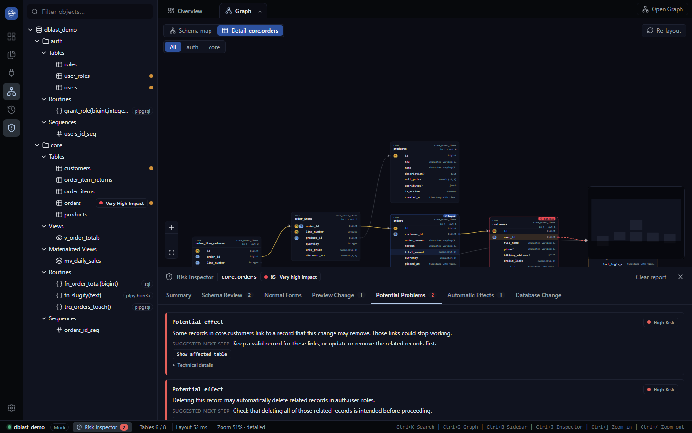

Vedi il database come una mappa
Tabelle e collegamenti diventano una mappa da esplorare. Le parti collegate tra loro vengono raggruppate automaticamente, e puoi riorganizzarle come preferisci.
DBlast ti fa vedere come è fatto il tuo database e ti avvisa prima che una modifica causi problemi. Pensato per chi lavora con i dati ogni giorno.
Le funzioni principali, già presenti nella versione in sviluppo.
Tabelle e collegamenti diventano una mappa da esplorare. Le parti collegate tra loro vengono raggruppate automaticamente, e puoi riorganizzarle come preferisci.
Vuoi eliminare, rinominare o cambiare qualcosa? DBlast ti mostra cosa ne risente, quanto è rischioso e cosa fare, prima di toccare il database.
Con un clic DBlast passa in rassegna tutto il database e ti segnala cosa si può migliorare.
Cerca qualsiasi elemento del database e ritrova le simulazioni fatte in passato.
Ti interessano i dettagli? Trovi tutto nella pagina Tecnologia.
L'app in azione su un database di esempio.




DBlast cresce ogni settimana. L'app non è ancora scaricabile: quando ci sarà una versione da provare, la troverai qui.
Vuoi essere tra i primi a provarla? Iscriviti alla beta.
Idee per il futuro di DBlast. Sono in valutazione: tempi e contenuti possono cambiare.
Un assistente che racconta il report in parole semplici, utile anche a chi non è tecnico.
Usare DBlast anche per collegarsi ai database, lanciare comandi e consultare i risultati.